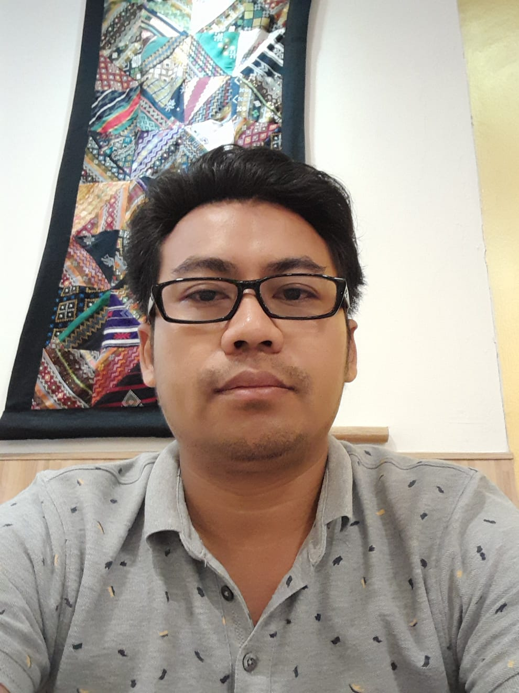

About Me

With over a decade of IT experience, I specialize in networking, IoT deployment, server administration, and ELV systems. My technical expertise includes Kubernetes, Istio, Helm, cloud computing, CI/CD, Infrastructure as Code (IaC) using Terraform, GitHub, HashiCorp Vault, Jenkins, Docker, Linux, and observability tools with extensive hands-on proof-of-concept (POC) experience.
Professional Experience
Professional Experience
Cloud Engineer (Education)
HelloCloud.io (Remote) (2024-04 to present)
- Researched and created contents,hands-on labs for Linux, Docker, Kubernetes, Terraform, HashiCorp Vault, GitHub, GitLab, Ansible, Istio, Helm, Prometheus, Grafana, and AWS services (EC2, ECS, EKS, RDS, ALB, and more).
System Engineer
Hyperstatiq Pte Ltd, Singapore (2023-01 to 2024-03)
- Projects: Artyzen Hotel Project, 7 Cuscaden Rd, Singapore
- Responsibilities: Installation and configuration of Linux systems, system maintenance, backup implementation, system performance monitoring, troubleshooting system security, patching, upgrades, package installation, and utilization of system monitoring tools such as Zabbix; Proficient in networking including TCP/IP, DHCP, NAT, DNS, and Routing & Switching Configuration; Provide designs and plans for ELV systems and other system requirements, including network/security, and systems administration for edge-devices; Coordinate with architects, cross-department engineering teams, and other stakeholders to seamlessly integrate systems during the project timeline.
IT Supervisor (Solution Lead)
Terraysss Solution Ltd, Phnom Penh, Cambodia (2017-01 to 2022-12)
- Projects:
- Won Majestic Hotel & Casino Project, Phum 4, Sangkat 4, 2 Thnou St Krong Preah Sihanouk, Cambodia
- The Gateway Phnom Penh, Russian Federation Blvd (110), Phnom Penh
- Urban Village, Samdech Hun Sen Blvd and National Road 2, Phnom Penh, Cambodia
- Yangon Convention Center Project (YCC), Yangon, Myanmar
- Myingyan 225MW Combined Cycle Power Plant Project, Taungtha, Myingyan district, Myanmar
System Engineer
Hyperstatiq Pte Ltd, Singapore (2023-01 to 2024-03)
- Projects: Artyzen Hotel Project, 7 Cuscaden Rd, Singapore
- Responsibilities: Installation and configuration of Linux systems, system maintenance, backup implementation, system performance monitoring, troubleshooting system security, patching, upgrades, package installation, and utilization of system monitoring tools such as Zabbix; Proficient in networking including TCP/IP, DHCP, NAT, DNS, and Routing & Switching Configuration; Provide designs and plans for ELV systems and other system requirements, including network/security, and systems administration for edge-devices; Coordinate with architects, cross-department engineering teams, and other stakeholders to seamlessly integrate systems during the project timeline.
IT Supervisor (Solution Lead)
Terraysss Solution Ltd, Phnom Penh, Cambodia (2017-01 to 2022-12)
- Projects:
- Won Majestic Hotel & Casino Project, Phum 4, Sangkat 4, 2 Thnou St Krong Preah Sihanouk, Cambodia
- The Gateway Phnom Penh, Russian Federation Blvd (110), Phnom Penh
- Urban Village, Samdech Hun Sen Blvd and National Road 2, Phnom Penh, Cambodia
- Yangon Convention Center Project (YCC), Yangon, Myanmar
- Myingyan 225MW Combined Cycle Power Plant Project, Taungtha, Myingyan district, Myanmar
IT Engineer (Network/System)
HI Telecom Engineering Group, Yangon, Myanmar (2016-02 to 2016-12)
- Projects: St John Hyper Market Project, Ocean Super Center, Yangon, Myanmar
- Responsibilities: Support and optimize servers and systems, including network infrastructure and security systems in both On-premises and Cloud Environments; Collaborate as a technical professional to plan, design, deploy, and maintain multiple services; Liaise with solution architects, field engineers, and engineering managers to seamlessly integrate systems and devices; Install and configure networking devices, conduct server administration, and implement security configurations such as Firewall, NACLs, Security Groups, etc.; Oversee the workload of other engineers, providing problem-solving assistance and relevant strategies to alleviate their burdens; Provide comprehensive user training for ELV Systems; Offer ongoing support and troubleshooting for ELV systems and IT infrastructure.
Data Processor
Plant Engineering Construction (PEC) Ltd, Singapore (2012-06 to 2015-06)
- Responsibilities: Managed document registers and controlled document flow for the project; Prepared and transmitted drawing transmittals to stakeholders as needed; Provided administrative support to the project team, including data processing tasks; Assisted in maintaining project documentation and ensuring accurate record-keeping.
IT Technician
NAWARAT Global Technology Co., Ltd, Yangon, Myanmar (2008 to 2012)
- Responsibilities: Set up workstations with computers and peripherals for users; Checked computer hardware for functionality and performed troubleshooting as needed; Installed and configured software and hardware on workstations to meet user requirements; Configured servers and clients for internet cafe operations, ensuring smooth network functionality; Set up and maintained network infrastructure including routers, switches, and access points; Ensured network security by installing and maintaining security software and implementing best practices; Responded to IT requests from users regarding hardware, software, and network issues; Provided technical assistance and troubleshooting.